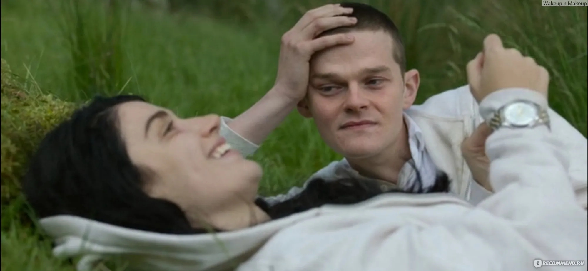
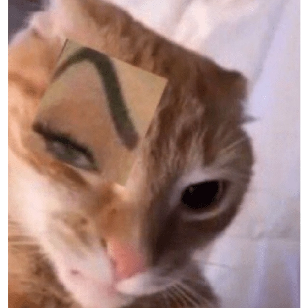

✦ SEÑAL PERDIDA ✦
Diego perdió la comunicación con Marian
16/05/2026 — El día que no entendí tu broma
↔ Desliza por los meses
Nuestros 5 meses en La Sirena
ENERO
Llegaste a La Sirena y sin saberlo, empezaste a hacer el trabajo más soportable. Todo empezó con una broma tonta.
FEBRERO
"Rob controla mi mente", proyecciones astrales y todas las bromas que solo nosotros entendíamos. Nuestro humor absurdo nos unió.
MARZO
Los turnos pesados se volvieron ligeros. Te convertiste en mi ancla en ese caos, y yo en la tuya.
ABRIL
El estrés empezó a pesar. Ambos pasando malos momentos, pero aguantando porque sabíamos que el otro estaba ahí.
MAYO
Todo explotó. Dije lo que no debía y casi pierdo a la persona más importante que encontré en ese trabajo.
Haz clic en cada uno para ver la cruda realidad
(No sé cuál es peor, honestamente)
👆 toc para ver el rating
Clásico. Echarle la culpa al alcohol mientras Marian llora de la vergüenza ajena.
5/5 en creatividad patética

👆 toc para ver el rating
Si "Rob controla mi mente" fuera real, me habría programado para no decir estupideces. Pero mira a estos dos, tan campantes.
5/5 — Hasta Adele se avergüenza de mí
👆 toc para ver el rating

Disculparse sin saber de qué. Y Marian con esa cara de "¿en serio, Diego?"
5/5 en incapacidad emocional
"Si tan malas son mis disculpas, imagínate lo sincera que es esta página..."
Lo que debí decir desde el principio
17 de mayo, 2026 — Desde algún lugar del espacio
Querida Marian,
Dos almas que se encontraron en la Sirena y orbitaron juntas 4 meses
✦ EPÍLOGO ✦
No te había dicho, pero si duré 4 meses en la Sirena fue porque la pasaba bien contigo y tus bromas. Por mucho tiempo fuiste mi soporte emocional.
"Que si Rob controla mi mente", "que si la proyección astral", "que si somos hermanos de otra vida" — esas bromas tontas fueron lo mejor del turno.
Perdón por no haber estado a la altura. Perdón por desquitarme con la única persona que realmente me entendía. Perdón por ser tan idiota con las bromas.
Te extraño, amiga mía.
</* Hecho con culpa, arrepentimiento y cariño cósmico */>